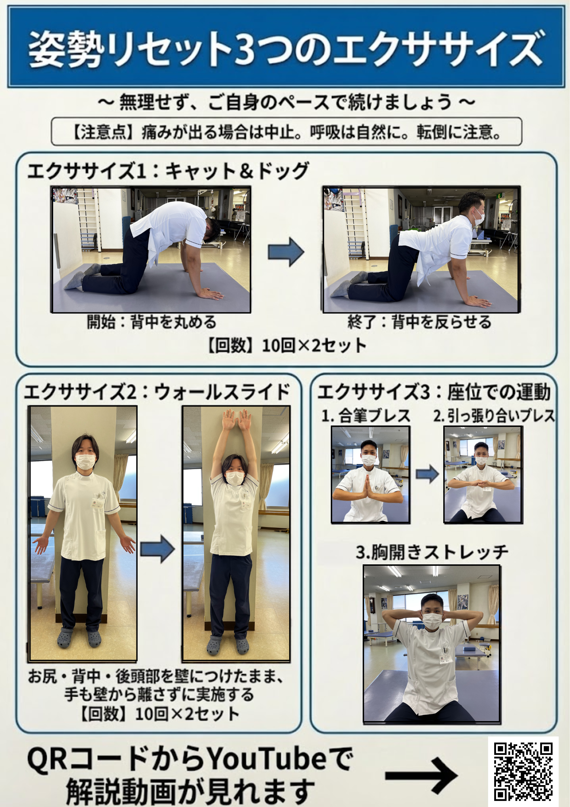

Posture Reset
姿勢リセット3つのエクササイズ
猫背や巻き肩が気になる方へ。
呼吸を意識して、胸郭と背骨をリセットしましょう。
体操シート

画像を「長押し」（PCは右クリック）すると保存できます
プログラム詳細
01
5往復
キャット＆ドッグ
背骨の動きを意識して、呼吸を忘れずに行いましょう。
02
10回 × 2
ウォールスライド
壁から手の甲が離れないように！痛みのない範囲で行ってください。
03
各3回
３つのプレス＆ストレッチ
- ① 合掌プレス
- ② 引っ張り合いプレス
- ③ 胸開きストレッチ
この体操の動画解説
現在、動画準備中です。